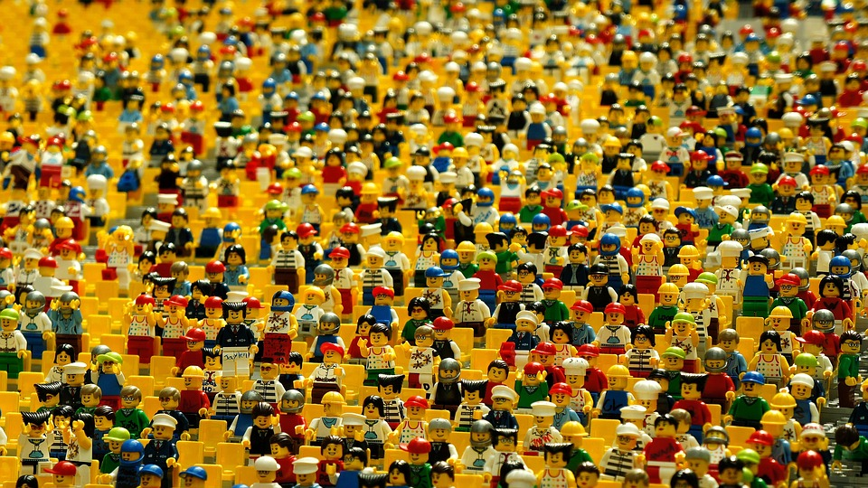
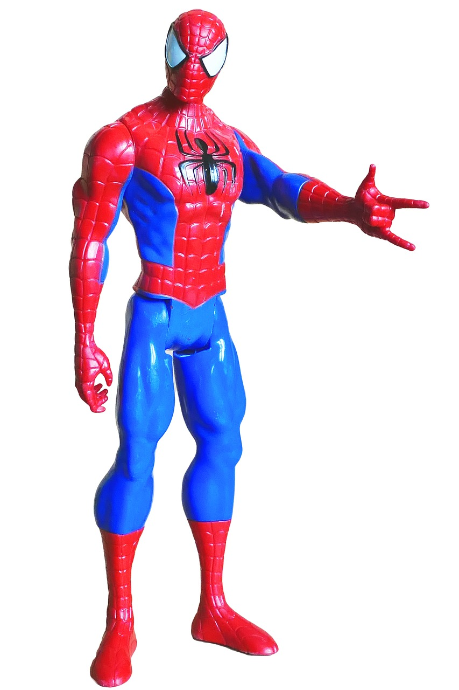

Los legos son figuras muy famosas infantiles que sirven para el coleccionismo de algunas franquicias como Star wars.Son faciles y divertidos de montar.
Las figuras depende de la marca y de la franquicia del personje puede ser mas o menos infantil suelen venir yaq montadas y son para decoracion.Me gustan bastante porque quedan muy bien en una estanteria.
